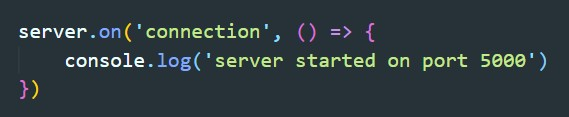
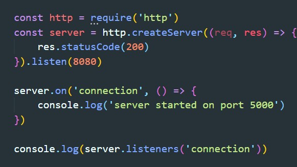
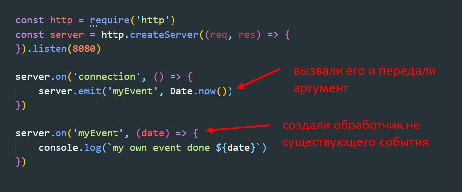
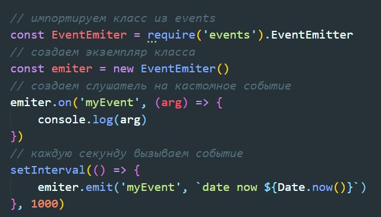

За события в Node.js отвечает специальный модуль - events. Назначить объекту обработчик события следует методом addListener(event, listener). Аргументами для него служат имя события (обычно строка в camleCase стиле) и функция обратного вызова. Существует синоним для addListener, выглядит он вот так.
У метода on есть полезная модификация - once(), назначающая однократный обработчик события. Т.е. callBack будет выполнен только при первом возникновении события.
Теоретически на один объект можно повесить не больше 10 слушателей. Ограничение преодолевается методом setMaxListeners(n), где n - требуемое максимально допустимое количество обработчиков.
Массив с подключениями можно получить с помощью метода listeners
Удаление слушателя происзодит с помощью метода removeListener. Тут все как в обычном браузерном JavaScript, нужно что бы callBAck не был анонимной функцией.
Метод emit позволяет нам самим вызвать событие. Причем событие не обязательно должно существовать, название события можно придумать самому. Первым аргументом emit принимает строку с названием события, а вторым аргументы, которые будут переданы в колбэк слушателю
EventEmiter - это основной объект, реализующий работу обработчиков событий в Node.JS. Любой объект, являющийся источником событий, наследует от класса EventEmiter
